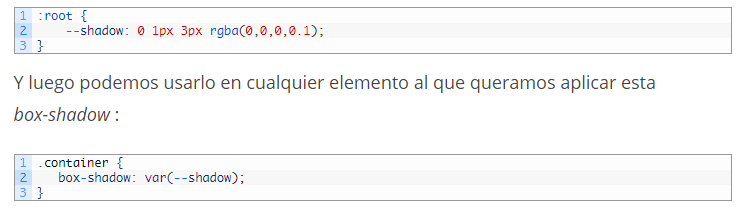

Una vez escuché una broma de un desarrollador de front-end: "¡La NASA ha aterrizado robots en Marte, y aquí todavía estamos luchando por alinear al centro nuestros divs!" Y me hace sentir mal que esta broma tenga mucho de verdad. Hacer algo que suena tan fácil y basado en el sentido común como centrar un cuadro dentro de un cuadro es increíblemente difícil de resolver en CSS. A menos que lo hayas encontrado antes. Y guardé el fragmento de código en alguna parte. E incluso si logras llevarlo a cabo, ¡siempre existe el temor de que se rompa horriblemente en algún navegador estúpido en alguna parte! CSS se relaciona con el primer lugar de "males web necesarios" junto con JavaScript. Es un estándar que evolucionó al azar, fue interpretado de manera diferente por diferentes fabricantes de navegadores y ahora está tan lleno de contradicciones que nadie se atreve a llamarse “experto en CSS”.
Las variables CSS son útiles cuando queremos aplicar el mismo estilo a elementos comunes. En lugar de agregar una box-shadow compleja, por ejemplo, a elementos comunes, podemos inicializar una variable y usar esa variable cada vez que queramos aplicar ese estilo a un elemento Inicializamos las variables CSS con :root y la propiedad que queremos establecer así:
